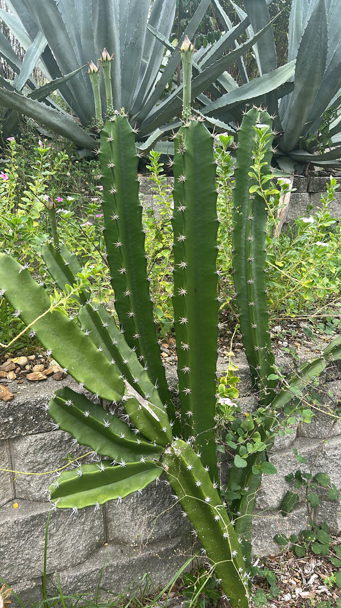

- The large white flowers open usually near midnight and close at or about dawn — you will never see them in full bloom during a daytime park visit, and each bloom lasts only a single night.
- The familiar Fairy Castle cactus sold as a houseplant is a compact cultivated form of this species, selected for its dense, upright, turret-like branching — a striking contrast to the sprawling, heavily armed wild plant it came from.
- In the Florida Keys, the endangered Key Largo woodrat feeds on the fruit, leaves, and buds of this cactus — making a thorny native an unlikely lifeline for one of the state's rarest mammals.
- Here is the naming puzzle: the common name 'triangle cactus' describes the mature stems in cross-section, while the scientific name tetragonus ('four-angled') describes the juvenile stems, which commonly have four angles. Linnaeus described both and named the plant in 1753 — the geometry just depends on how old the stem is.
Triangle cactus is native to coastal southern Florida and the Lower Rio Grande Valley of Texas, and its range continues south through the Caribbean, Mexico, Central America, and into northern South America as far as Venezuela. Florida has relatively few native cactus species, and triangle cactus is one of them.
In Florida it grows in coastal berms, maritime and rockland hammocks, shell mounds, and sandy coastal thickets — habitats concentrated in the southern peninsula and Keys. The state of Florida lists it as Threatened, and wild populations are uncommon enough that the plant warrants active conservation attention.
- The naming of this plant is a small puzzle. The common name 'triangle cactus' describes the mature stems, which are typically three-sided in cross-section. The scientific name tetragonus — Greek for 'four-angled' — describes the juvenile stems, which commonly have four angles; older stems can have three to five.
- The genus name Acanthocereus combines the Greek akantha ('spine') and the Latin cereus ('candle'), a fitting image for a tall, thorny, candle-like stem.
- Linnaeus formally described the species in 1753 as Cactus tetragonus; it was moved to the genus Acanthocereus in 1938 by Dutch botanist Pieter Wagenaar Hummelinck. Florida's official threatened-plant materials may list the species under the older name Acanthocereus pentagonus; modern taxonomic databases such as Kew's Plants of the World Online accept Acanthocereus tetragonus.
- Left to its own devices, this cactus scrambles and sprawls rather than standing bolt-upright. Stems arch outward, lean on surrounding vegetation for support, and can root where they contact the ground — gradually building dense, nearly impassable thickets. That growth habit makes it effective living fencing, a role it has served across the Caribbean.
- The flowers are unusually large — about 6 to 8 inches (roughly 6 to 8 inches) across — white, fragrant, and strictly nocturnal, opening usually near midnight and closing at or about dawn. Blooming occurs from midsummer into fall (July through September in Florida).
- The edible red fruit is a wild relative of commercial dragon fruit (Selenicereus, formerly Hylocereus); across parts of Mexico and the Caribbean, these wild pitahayas are eaten fresh or pressed into drinks.
The flowers are built for the night shift. They open after midnight, release a strong fragrance, and are pollinated primarily by nocturnal hawkmoths (family Sphingidae) and bats. Because the flowers open and close between midnight and dawn, diurnal visitors rarely interact with fully open blooms.
The bright red fruits that follow are eaten by birds, which disperse the seeds. The fruit is edible and sweet — it is a wild relative of the commercially grown dragon fruit (Selenicereus, formerly Hylocereus), and the ripe pitahayas are eaten fresh or made into drinks across parts of the species' native range.
In the Florida Keys, the endangered Key Largo woodrat (Neotoma floridana smalli) feeds on the fruit, leaves, and buds of this cactus, making it a documented food source for one of Florida's rarest mammals. The dense, spiny thickets also provide shelter and cover for small animals.
Triangle cactus reproduces by seed and readily by stem cuttings. In the wild, stems that arch down and contact the ground can root at their tips, allowing a single plant to spread vegetatively and build a colony over time.
Flowers are large — about 6 to 8 inches (roughly 6 to 8 inches) across — with greenish-white outer tepals and pure white inner tepals surrounding yellow stamens. They open usually near midnight and close at or about dawn; each flower lasts a single night. Blooming occurs from midsummer into fall, with flowers reported from July through September in Florida.
The fruit is a shiny, bright red, oblong berry typically around 2 inches long but ranging up to roughly 3 inches, filled with small black seeds embedded in sweet, juicy pulp. It is edible and has been used as food in parts of the species' native range.
Dark green, jointed, and sharply angled — typically three-sided on mature stems, while younger stems commonly have four or five ribs. Stems are about 2¼ to 3 inches in diameter. Each areole bears gray spines in two lengths: one to two central spines up to roughly 1½ inches long, and six to eight shorter radial spines up to roughly 1 inch around them.
The stems are the giveaway — dark green, sharply angled (usually three-sided on mature growth, more angles on younger stems), and armed at every areole with clusters of gray spines. Look along the ribs for those evenly spaced spine clusters, and check the tips of arching stems to see whether any have rooted into the ground.
In summer and early fall, look for spent flower tubes still attached at the areoles — the large, scaly, spine-bearing flower tube is distinctive even after the petals have dropped. If fruit is present, the shiny red berries stand out clearly against the green stems.
The spines are the real hazard here. Each areole carries multiple gray spines — some up to roughly 1½ inches long — and they can cause painful punctures. Keep children and pets well clear, and never reach into or through the plant.
The ripe red fruit is reported as edible and is eaten in parts of the species' native range, but as with any wild plant, do not eat it unless you are certain of the identification and preparation.
Triangle cactus is listed as Threatened by the State of Florida due to loss of the coastal hammock and sandy coastal thicket habitats it depends on. Note that Florida's official threatened-plant materials may list the species under the older name Acanthocereus pentagonus; modern taxonomic databases, including Kew's Plants of the World Online, accept Acanthocereus tetragonus as the current name.
The 'fairy castle cactus' widely sold as a houseplant is a compact cultivated form of this same species, selected for its dense, upright, turret-like branching. It rarely flowers in typical indoor cultivation and looks nothing like the sprawling, spiny wild plant it came from.
This species is unusually well adapted to harsh coastal conditions — it tolerates salt-laden wind, nutritionally poor sandy and shell-mound soils, and prolonged drought that would kill most other native shrubs. That toughness is part of why it has persisted in Florida's battered coastal hammocks.
- © Denise Sosa (CC-BY-NC), via iNaturalist